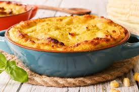

Inicio
Receta de Pastel de Choclo

Descripción
El pastel de choclo es un plato típico de la gastronomía chilena. Consiste en una base de pino de carne sazonado, cubierta con una mezcla cremosa de choclo molido y horneada hasta obtener una superficie dorada. Es una preparación tradicional, sabrosa y muy popular en reuniones familiares.
Ingredientes
- 6 choclos grandes (o 1 kg de choclo congelado)
- 500 g de carne molida de vacuno
- 1 cebolla picada
- 2 dientes de ajo picados
- 2 cucharadas de aceite
- 1 cucharadita de comino
- 1 cucharadita de ají de color (paprika)
- Sal al gusto
- Pimienta al gusto
- ½ taza de leche
- 2 cucharadas de mantequilla
- 2 cucharadas de albahaca fresca picada
- 2 huevos duros
- 10 aceitunas negras
- Azúcar (opcional, para espolvorear)
Paso a paso
- Sofríe la cebolla y el ajo en el aceite hasta que estén transparentes.
- Agrega la carne molida y cocina hasta que se dore.
- Incorpora el comino, el ají de color, la sal y la pimienta. Cocina durante 10 minutos y reserva.
- Cocina los choclos y luego muélelos o licúalos junto con la leche y la albahaca hasta obtener una mezcla homogénea.
- Cocina esta mezcla a fuego medio junto con la mantequilla, revolviendo constantemente hasta que espese ligeramente.
- En una fuente para horno, distribuye el pino de carne como base.
- Agrega los huevos duros cortados en mitades y las aceitunas sobre el pino.
- Cubre toda la preparación con la mezcla de choclo.
- Si lo deseas, espolvorea una fina capa de azúcar sobre la superficie para lograr un gratinado más dorado.
- Hornea a 180 °C durante 30 a 40 minutos, o hasta que la superficie esté dorada.
- Deja reposar unos minutos antes de servir y disfruta caliente.